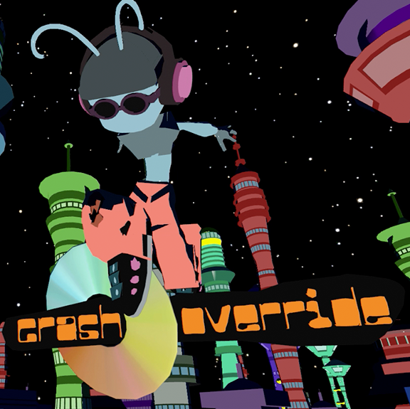

Crash Override is an open-world skateboarding and hoverboarding adventure that places players in the role of a curious alien exploring a sprawling futuristic city. Cruise through diverse districts, uncover hidden paths, and unlock entirely new environments as you discover the world at your own pace.
Collect Spex scattered throughout the city to purchase cosmetic items, gameplay upgrades, and powerful boosters from the in-game shop, allowing you to customize your character and enhance your movement. Combining freeform exploration, fast-paced traversal, and a playful sci-fi aesthetic, Crash Override encourages players to experiment, discover secrets, and continuously expand their adventure through an ever-growing urban playground.